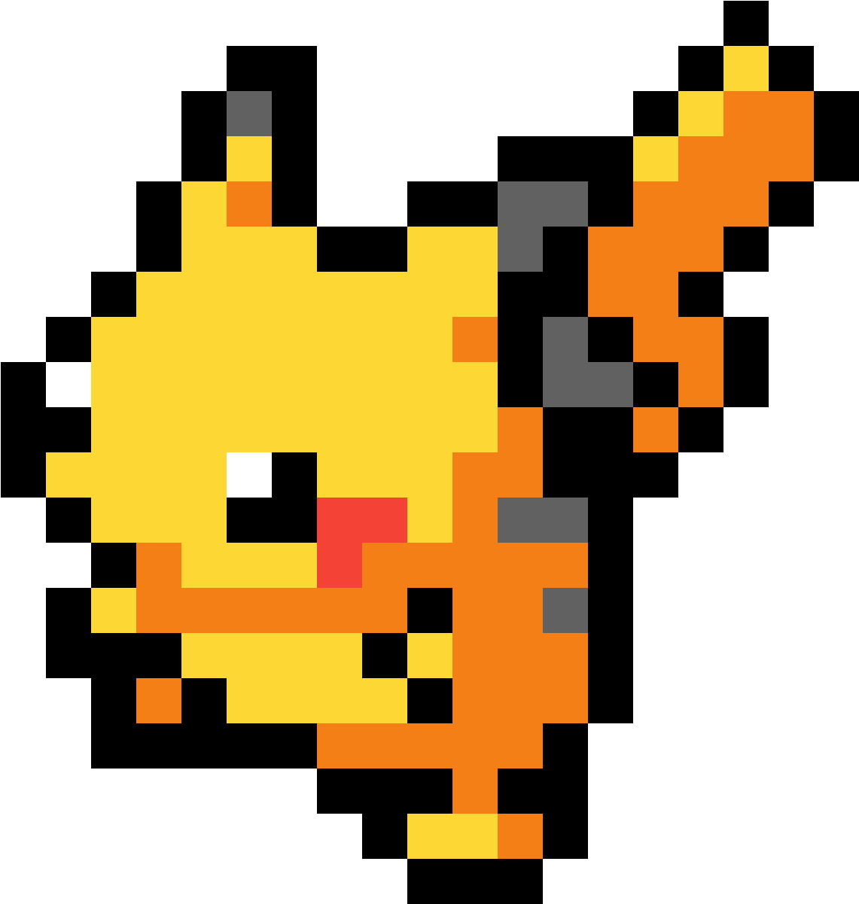
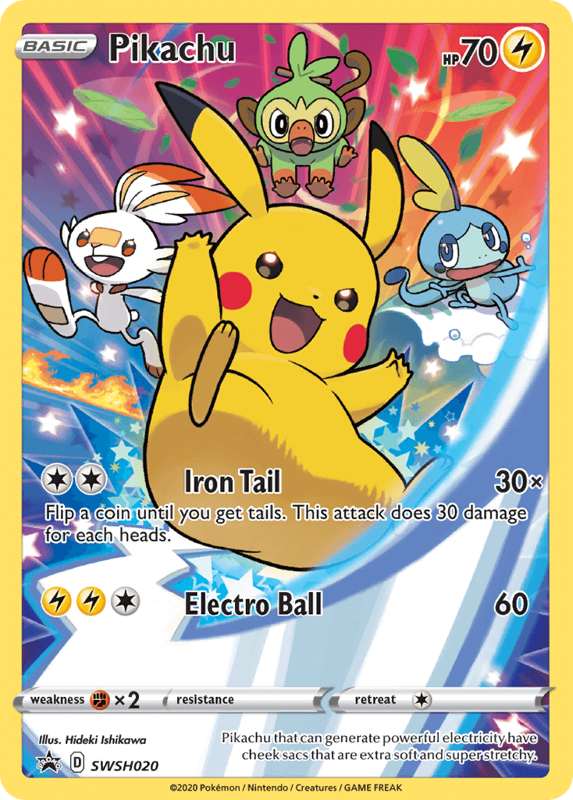
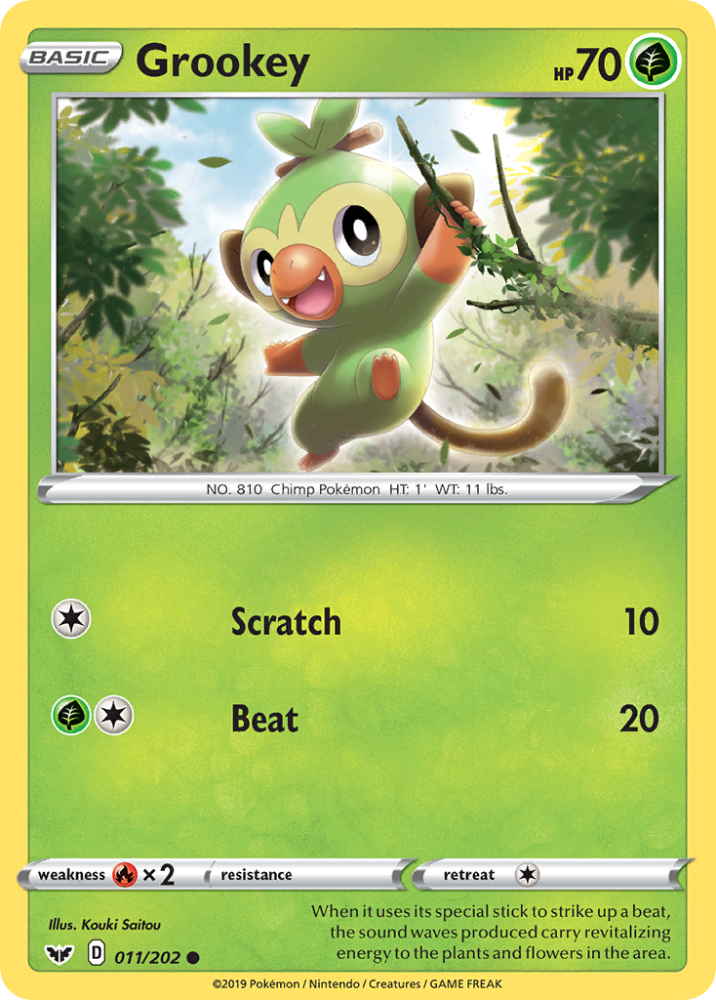
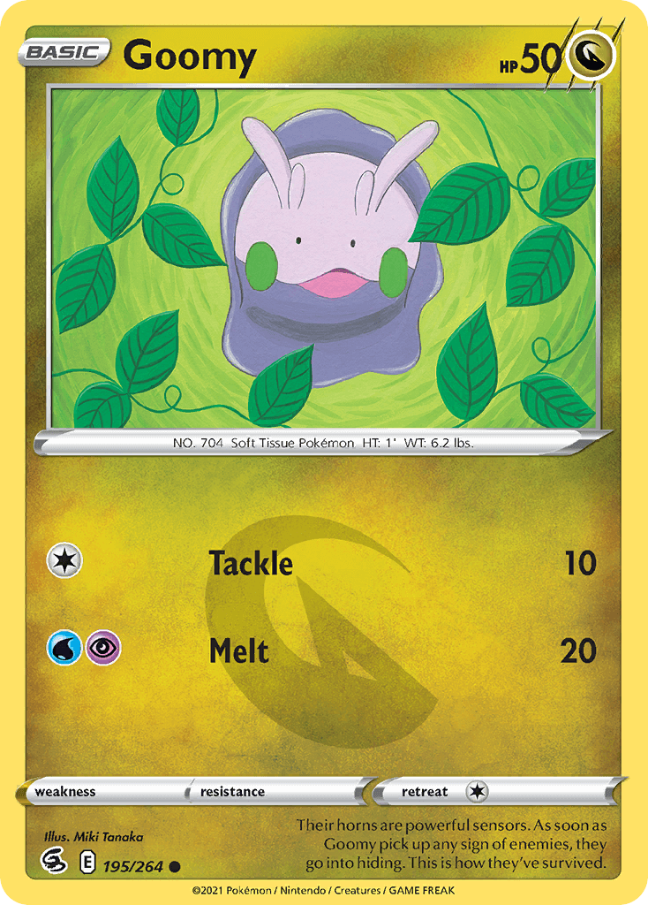
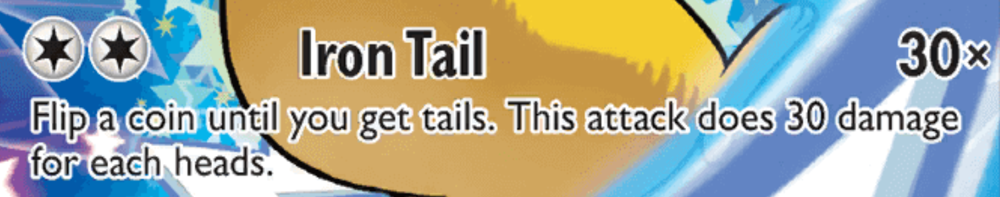
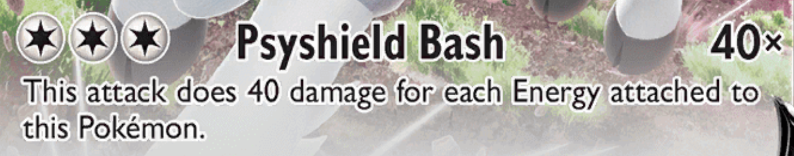
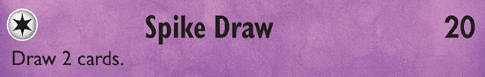
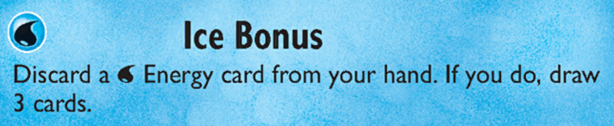
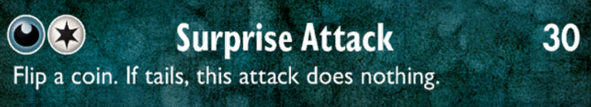
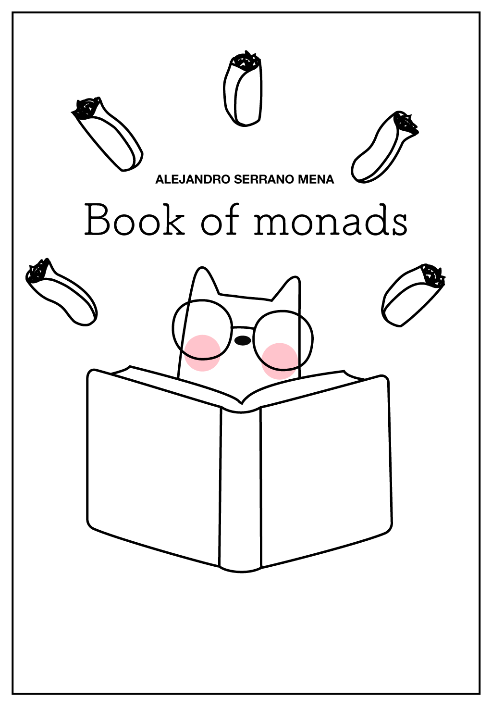

class: center, middle, title-slide count: false  .less-line-height[ Alejandro Serrano @ ZuriHac 2022 .grey[🐦 @trupill - 🐈⬛ serras - 👨💻 Tweag] ] --- # 🥅 Overall goal ### .grey[How do we build software with Haskell?] --- # 🥅 Overall goal ### .grey[How do we build software with Haskell?] 1. Domain-specific languages <br /> Representing actions and scripts <br /> Property-based testing 2. Communicating over the network <br /> Serialization (without boilerplate) <br /> Error handling <br /> Concurrency across threads --- # 🃏 Overall goal ### .grey[Build an interactive card game] 1. Represent the cards and the actions 2. Communicate different clients --- # 🃏 Overall goal ### .grey[Build an interactive card game] 1. Represent the cards and the actions 2. Communicate different clients <table> <tr> <td><img src="img/zurihac.svg" width="100%" /></td> <td width="70%" style="padding: 10px;"><div class="grey font120">This is <b>ZuriHac</b>!</div> Collaborate <br />Discuss<br />Enjoy</td> </tr> </table> --- #  Pokémon Trading Card Game Players take turns drawing and playing cards <table> <tr> <td style="vertical-align: top"></td> <td width="68%" style="padding-left: 20px; line-height: 1.3;"> <div style="margin-bottom: -20px">Goal: knock out 6 of your opponent's Pokémon</div> <ul> <li>For this your use <b>attacks</b></li> <li>Those attacks cost <b>energy</b></li> <li>Each attack does <b>damage</b></li> <li><b>HP</b> define the maximum damage before knock-out</li> </ul> </td> </tr> </table> --- # 🏗️ Our approach ### .grey[Explanations interleaved with tasks] 1. Representing cards 2. Representing actions 3. Testing actions --- # 🏗️ Our approach ### .grey[Explanations interleaved with tasks] 1. Representing cards 2. Representing actions 3. Testing actions ## .grey[Domain-specific Language (DSL)] Implementation of the _Ubiquitous Language_ idea from DDD, the code speaks the domain --- # Representing cards <table> <tr> <td style="vertical-align: top"></td> <td width="68%" style="padding-left: 20px; line-height: 1.3;"> <div style="margin-bottom: -20px">Each card comes with...</div> <ul style="margin-bottom: 20px"> <li>Name: <span class="remark-code-zoom">Pikachu</span></li> <li>Type: <img src="img/energy/lightning.webp" height="32px" /></li> <li>HP: 70</li> <li>Attack(s)</li> </ul> (forget about the rest for now) </td> </tr> </table> --- # ⚙️ Algebraic Data Types (ADTs) <table style="font-size: 70%"> <tr> <td style="vertical-align: top; text-align: right;"></td> <td width="68%" style="padding-left: 20px; line-height: 1.3;"> <div style="margin-bottom: -20px">Each card comes with...</div> <ul style="margin-bottom: 20px"> <li>Name: <span class="remark-code-zoom">Pikachu</span></li> <li>Type: <img src="img/energy/lightning.webp" height="20px" /></li> <li>HP: 70</li> <li>Attack(s)</li> </ul> </td> </tr> </table> Straightforward translation of the description .code70[ ```haskell data Card = Card { name :: Text , typ :: Energy , hp :: Natural , attacks :: [Attack] } ``` ] --- # ⚙️ Algebraic Data Types (ADTs) <table style="font-size: 70%"> <tr> <td style="vertical-align: top; text-align: right;"></td> <td width="68%" style="padding-left: 20px; line-height: 1.3;"> <div style="margin-bottom: -20px">Each card comes with...</div> <ul style="margin-bottom: 20px"> <li>Name: <span class="remark-code-zoom">Pikachu</span></li> <li>Type: <img src="img/energy/lightning.webp" height="20px" /></li> <li>HP: 70</li> <li>Attack(s)</li> </ul> </td> </tr> </table> .code70[ ```haskell data Card = Card { name :: Text , typ :: Energy , hp :: HP , attacks :: [Attack] } newtype HP = HP Natural deriving (Eq, Show, Num) ``` ] --- # ☯️ Energies There are 10 types of energy in the game, - 9 regular energies <img src="img/energy/lightning.webp" width="32px" /> - Colorless energy - Any card providing a regular energy may also provide colorless energy = 2 <img src="img/energy/lightning.webp" width="32px" /> + 1 of any other --- # ☯️ Energies There are 10 types of energy in the game, - 9 regular energies <img src="img/energy/lightning.webp" width="32px" /> - Colorless energy .code70[ ```haskell data Energy = Colorless | Grass | Fire | Water | Lightning | Fighting | Psychic | Darkness | Metal | Dragon data Card = PokemonCard { ... } | EnergyCard { typ :: Energy } ``` ] --- # ⚔️ Attacks We consider only "simple" attacks for now <div style="text-align: center"></div> .code70[ ```haskell data Attack = Attack { attackName :: Text , cost :: [Energy] , damage :: Natural } ``` ] --- # 🧑💻 Time for practice! .very-little-margin-top[ ### `serras.github.io/zurihac-workshop` ] Define values for the following cards <div style="margin-top: -20px">   </div> --- # 🧑💻 Time for practice! .very-little-margin-top[ ### `serras.github.io/zurihac-workshop` ] Check whether some energy cards are enough to "pay" for the cost of an attack ```haskell enoughEnergy :: [Energy] -> [Card] -> Bool ``` Then, refine it to return the missing energy ```haskell missingEnergy :: [Energy] -> [Card] -> Maybe [Energy] ``` --- # ⚔️ Attacks, redux .code70[ ```haskell data Attack = Attack { ..., damage :: Natural } ``` ] ## .grey[This is a ~~lie~~ simplification] --- # ⚔️ Attacks, redux     --- # ⚔️ Attacks, redux .code70[ ```haskell data Attack = Attack { ..., damage :: Natural } ``` ] ## .grey[This is a ~~lie~~ simplification] .top-margin[ - More actions than mere damage - Draw and discard cards - Actions may depend on the state - Attached cards - Coin flips - Actions may involve conditionals and loops ] --- # ⚔️ Attacks, redux .code70[ ```haskell data Attack = Attack { ..., action :: ??? } ``` ] ## How do we model .grey[actions]? .top-margin[ - More actions than mere damage - Draw and discard cards - Actions may depend on the state - Attached cards - Coin flips - Actions may involve conditionals and loops ] --- # 🪙 Coin flips  .code70[ ```haskell data FlipOutcome = Heads | Tails data Action = FlipCoin (FlipOutcome -> Action) | Damage Natural surpriseAttackAction = FlipCoin $ \case Heads -> Damage 30 Tails -> Damage 0 ``` ] --- # 🪙 Coin flips ## .grey[🧑💻 Time for practice!] .font50[`serras.github.io/zurihac-workshop`] --- # 🪙 Coin flips ```haskell ironTailAction = go 0 where go acc = FlipCoin $ \case Tails -> Damage acc Heads -> go (acc + 30) ``` --- # 🧞 Syntax/algebra and interpretation `Action` defines the **syntax** of our DSL <br /> (also known as **algebra** in some circles) > "The language itself", "what we can say" --- # 🧞 Syntax/algebra and interpretation `Action` defines the **syntax** of our DSL <br /> (also known as **algebra** in some circles) An **interpretation** defines how each value behaves in a certain context > "What a sentence means" 1 syntax / algebra ⟷ ∞ interpretations --- # 🎰 Randomness interpretation During the actual game, we expect to generate random coin flips to obtain the actual damage ```haskell interpretRandom :: Action -> IO Natural ``` ## .grey[🧑💻 Time for practice!] .font50[`serras.github.io/zurihac-workshop`] --- # 🎰 Randomness interpretation During the actual game, we expect to generate random coin flips to obtain the actual damage ```haskell interpretRandom :: Action -> IO Natural interpretRandom (Damage d) = pure d interpretRandom (FlipCoin f) = do outcome <- flipCoin interpretRandom (f outcome) -- one-liner -- flipCoin >>= interpretRandom . f ``` --- # 🎴 Actions about cards --- # 🎴 Actions about cards .code70[ ```haskell data Action = FlipCoin (FlipOutcome -> Action) | DrawCard (Maybe Card -> Action) -- ^ there may not be more cards | QueryAttached ([Card] -> Action) -- ^ get info. about the current Pokémon | Damage Natural ``` ] ### .grey[Can you spot the pattern? 🔍] --- # 🎴 Actions about cards .code70[ ```haskell data Action = FlipCoin (FlipOutcome -> Action) | DrawCard (Maybe Card -> Action) -- ^ there may not be more cards | QueryAttached ([Card] -> Action) -- ^ get info. about the current Pokémon | Damage Natural ``` ] - `Damage` is a **final** action - The rest "generate" a value, <br /> which is consumed to keep going --- # 🔩 The `Operational` monad .code70[ ```haskell data Program instr a where Done :: a -> Program instr a (:>>=) :: instr a -> (a -> Program instr b) -> Program instr b ``` ] Split the pattern from the concrete instructions .code70[ ```haskell data Action a where FlipCoin :: Action FlipOutcome DrawCard :: Action (Maybe Card) QueryAttached :: Action [Card] ``` ] --- # ⚙️ Generalized ADTs (GADTs) Refine the resulting type from constructors .code70[ ```haskell {-# language GADTs #-} data Action a where FlipCoin :: Action FlipOutcome DrawCard :: Action (Maybe Card) QueryAttached :: Action [Card] ``` ] Here it represents the "generated" value --- # 🪙 Operational coin flips ```haskell perform :: instr a -> Program instr a perform action = action :>>= Done instance Functor (Program instr) instance Applicative (Program instr) instance Monad (Program instr) ``` --- # 🪙 Operational coin flips ```haskell ironTailAction :: Program Action Natural ironTailAction = do outcome <- perform FlipCoin case outcome of Tails -> pure 0 Heads -> (30 +) <$> ironTailAction ``` --- # 🪙 Operational coin flips Being a `Monad` gives access to many functions .code70[ ```haskell ironTailAction :: Program Action Natural ironTailAction = do hs <- unfoldWhileM (== Heads) (perform FlipCoin) pure $ 30 * genericLength hs ``` ] `unfoldWhileM` comes from `monad-loops` --- # 🎴 Actions about cards ## .grey[🧑💻 Time for practice!] .font50[`serras.github.io/zurihac-workshop`] .margin-top[ 1. Write a function to **draw *n* ** cards 2. Add an additional operation to **discard** cards - Must include a predicate to select cards - Outcome: whether a card was discarded ] --- # 🔩 Interpreting `Operational` One generic function for every `Program` .code70[ ```haskell interpret :: Monad m => (forall x. instr x -> m x) -- ^ instruction interpreter -> Program instr a -> m a interpret f = go where go (Done x) = return x go (action :>>= k) = do x <- f action go (k x) -- f action >>= go . k ``` ] --- # 🔩 Interpreting `Operational` We can focus on each instruction, <br /> instead of dealing with passing information .code70[ ```haskell interpretRandom :: Program Action a -> IO a interpretRandom = interpret $ \case FlipCoin -> flipCoin -- rest of cases ``` ] --- # 🩻 Property-based testing Generate many _random_ tests for the same function (or set of them) Focus on **properties** rather than examples - PBT frameworks are good at generating corner cases (extreme values, empty lists, ...) --- # ✅ Testing actions ### .grey[How can we test `ironTailAction`?] --- # ✅ Testing actions ### .grey[How can we test `ironTailAction`?] - If we get a tail as first result, we get 0 - If our outcomes start with `n` heads, <br /> then the result is `30 * n` - Both implementations should coincide --- # ✅ Testing actions ### .grey[How can we test `ironTailAction`?] ❌ Using `interpretRandom` would not work - The outcome is random - Testing `IO` is cumbersome --- # 🧮 Pure interpretation of flipping We pass the future outcomes as a parameter ```haskell interpretPure :: [FlipOutcome] -> Program Action a -> a ``` --- # 🧮 Pure interpretation of flipping We pass the future outcomes as a parameter ```haskell interpretPure :: [FlipOutcome] -> Program Action a -> a ``` Now we control the future 🔮 ```haskell > interpretPure [Heads, Heads, Tails] ironTailAction 60 ``` --- # 🧮 Pure interpretation of flipping The `State` monad threads the current value .code70[ ```haskell interpretPure :: [FlipOutcome] -> Program Action a -> a interpretPure outcomes = flip evalState (cycle outcomes) . interpret f where f :: Action x -> State [FlipOutcome] x f FlipCoin = do ~(result : nexts) <- get put nexts return result ``` ] --- # 🧮 Pure interpretation of flipping Writing it by hand might be easier... 🤔 .code70[ ```haskell interpretPure :: [FlipOutcome] -> Program Action a -> a interpretPure outcomes = go (cycle outcomes) where go :: [FlipOutcome] -> Program Action x -> x go _ (Done x) = x go ~(result : nexts) (FlipCoin :>>= k) = go nexts (k result) ``` ] --- # 🏃 QuickCheck + Tasty 🥧 **QuickCheck** is a well-known library for property-based testing - Define properties of functions - Support for custom generators **Tasty** is a test runner - Runs and reports over a set of tests --- # 🏃 QuickCheck + Tasty 🥧 🥧 `testGroup` + 🏃 `testProperty` - `outcomes` is randomly selected .code70[ ```haskell tests :: TestTree tests = testGroup "Iron Tail" [ testProperty "non-negative" $ \outcomes -> interpretPure (outcomes ++ [Tails]) ironTailAction >= 0 , ... ] ``` ] --- # ✋ A wrong property ```haskell interpretPure ... ironTailAction > 0 ``` A counter-example is found by QuickCheck .code70[ ``` Iron Tail non-negative: FAIL *** Failed! Falsified (after 1 test): [] Use --quickcheck-replay=139730 to reproduce. Use -p '/non-negative/' to rerun this test only. ``` ] --- # The "times 30" property To create good properties you must... - Be creative with the inputs - Ensure that inputs are correct .code70[ ```haskell testProperty "30 * # heads" $ \(hs :: Int) -> hs > 0 ==> let outcomes = replicate hs Heads ++ [Tails] in interpretPure outcomes ironTailAction == fromIntegral (hs * 30) ```] --- # ✅ Testing actions ### .grey[🧑💻 Time for practice!] .font50[`serras.github.io/zurihac-workshop`] - If we get a tail as first result, we get 0 - Both implementations should coincide - ... --- # 📋 Summary ### .grey[Haskell is a great language for DSLs] .margin-top[ - ADTs model the domain sharply - We can model both data and processes - `Operational` save lots of boilerplate - One model, many interpretations - Useful for (property-based) testing ] --- # ↔️ Initial and final style **Initial** style: modeling actions using `data` - Variations: direct, free, operational **Final** style: modeling actions using `class` - Interpretations represented by `instance`s - Closer to `interface`s in other languages --- # 😸 A word from our sponsor ## `leanpub.com/book-of-monads` <table style="margin-top: 40px;"> <tr> <td style="vertical-align: top"></td> <td width="68%"> <ul style="margin-top: 5px"> <li>Building your own monad with <span class="remark-inline-code">Operational</span> and <span class="remark-inline-code">Free</span></li> <li>Initial and final style</li> <li><span class="remark-inline-code">Applicative</span> and friends</li> <li>Monad transformers (and effects)</li> </ul> </td> </tr> </table> --- class: center, middle, title-slide # 🤩 It's been a pleasure ## Enjoy the rest of ZuriHac! <br /> .grey[See you again on Monday? 🤗]